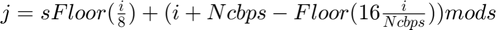

Interleaver
Interleaver that swaps bits.
Contents
Syntax
IData = Interleaver_string(data, Ncbps)
Description
function IData = Interleaver_string(data, Ncbps) returns a set of properly interleaved bits (IDatos). Based on two permutations made on the input data. The first permutation ensures that the adjacent bits are not placed on adjacent subcarriers and the second permutation ensures that the adjacent bits are alternately modulated in one or more significant bits of a constellation.
Input arguments
- data
Input vector, specified as a vector of bits without interleaving.
- Ncbps
Number of bits coded per symbol.
Output arguments
- IData
Interlaced bits vector.
Examples
The function Interleaver_string(data, Ncbps) is called.
function IData = Interleaver_string(data, Ncbps)
Creation of the permutation vector.
permutation = zeros(1, length(data));
IData = zeros(1, length(data));
Obtaining the number of bits (coded) per subcarrier.
Nbpsc = Ncbps / 48;
s = max(Nbpsc/2 , 1);
Divide the string of bits into several strings of a number multiple of Ncbps.
for a = 1 : length(data) / Ncbps
First permutation according to the IEEE 802.11 standard
The first permutation of the interleaver is given by the equation:
for b = 1 : Ncbps c = (Ncbps/16) * mod((b-1), 16) + floor((b-1)/16); % Permutation rule k = (a-1)*Ncbps + b; % Real original index i = (a-1)*Ncbps + (c+1); % Real new index permutation(k) = data(i); % Permutation end
Second permutation according to the IEEE 802.11 standard
The second permutation of the interleaver is given by the equation:

It is also necessary to obtain the s parameter for the permutation, which is given by the equation:
for b = 1 : Ncbps c = s * floor((b-1)/s) + mod( ( (b-1) + Ncbps - floor( 16 * (b-1)/Ncbps ) ), s); i = (a-1)*Ncbps + b; j = (a-1)*Ncbps + (c+1); IData(i) = permutation(j); end
end
end
See also